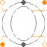
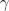
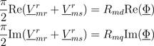
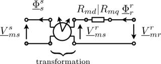

RotorSaliencyAirGapAir gap model with rotor saliency |

|
Information
This information is part of the Modelica Standard Library maintained by the Modelica Association.
This salient air gap model can be used for machines with uniform air gaps and for machines with rotor saliency. The air gap model is not symmetrical towards stator and rotor since it is assumed the saliency always refers to the rotor. The saliency of the air gap is represented by a main field inductance in the d- and q-axis.
For the mechanical interaction of the air gap model with the stator and the rotor is equipped with two rotational connectors. The torques acting on both connectors have the same absolute values but different signs. The difference between the stator and the rotor angle, , is required for the transformation of the magnetic stator quantities to the rotor side.
The air gap model has two magnetic stator and two magnetic rotor ports. The magnetic potential difference and the magnetic flux of the stator (superscript s) are transformed to the rotor fixed reference frame (superscript r). The effective reluctances of the main field with respect to the d- and q-axis are considered then in the balance equations

according to the following figure.
|  |
See also
SinglePhaseWinding, SymmetricMultiPhaseWinding, SymmetricMultiPhaseCageWinding SaliencyCageWinding
Parameters (3)
| p |
Value: Type: Integer Description: Number of pole pairs |
|---|---|
| L0 |
Value: Type: SalientInductance Description: Salient inductance of a single unchorded coil w.r.t. the fundamental wave |
| R_m |
Value: Type: SalientReluctance Description: Reluctance of the air gap model |
Connectors (6)
| port_sp |
Type: PositiveMagneticPort Description: Positive complex magnetic stator port |
|
|---|---|---|
| port_sn |
Type: NegativeMagneticPort Description: Negative complex magnetic stator port |
|
| port_rp |
Type: PositiveMagneticPort Description: Positive complex magnetic rotor port |
|
| port_rn |
Type: NegativeMagneticPort Description: Negative complex magnetic rotor port |
|
| flange_a |
Type: Flange_a Description: Flange of the rotor |
|
| support |
Type: Flange_a Description: Support at which the reaction torque is acting |
Components (9)
| L0 |
Type: SalientInductance Description: Salient inductance of a single unchorded coil w.r.t. the fundamental wave |
|
|---|---|---|
| R_m |
Type: SalientReluctance Description: Reluctance of the air gap model |
|
| V_mss |
Type: ComplexMagneticPotentialDifference Description: Complex magnetic potential difference of stator w.r.t. stator fixed frame |
|
| V_msr |
Type: ComplexMagneticPotentialDifference Description: Complex magnetic potential difference of stator w.r.t. rotor fixed frame |
|
| V_mrr |
Type: ComplexMagneticPotentialDifference Description: Complex magnetic potential difference of rotor w.r.t. rotor fixed frame |
|
| Phi_ss |
Type: ComplexMagneticFlux Description: Complex magnetic flux of stator w.r.t. stator fixed frame |
|
| Phi_sr |
Type: ComplexMagneticFlux Description: Complex magnetic flux of stator w.r.t. rotor fixed frame |
|
| Phi_rr |
Type: ComplexMagneticFlux Description: Complex magnetic flux of rotor w.r.t. rotor fixed frame |
|
| rotator |
Type: Complex Description: Equivalent vector representation of orientation |
Used in Components (1)
|
Modelica.Magnetic.FundamentalWave.Interfaces
Partial model for induction machine |